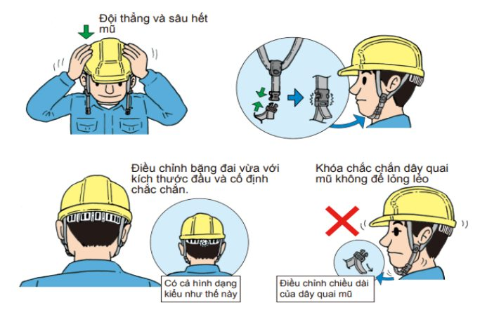

DANH MỤC SẢN PHẨM

BÀI VIẾT
Trong bối cảnh FDI đổ mạnh vào Việt Nam, duy trì chuỗi cung ứng vật tư vận hành, bảo trì và sửa chữa (MRO) ổn định đang trở thành bài toán sinh tử với hàng nghìn nhà máy.
Từ nhà xưởng, công trường đến dây chuyền sản xuất, lựa chọn và trang bị thiết bị bảo hộ phù hợp là yêu cầu quan trọng, góp phần hạn chế tai nạn lao động.
Chất lượng đường cắt không chỉ phụ thuộc vào công suất máy mà còn liên quan đến cách cố định vật liệu, lựa chọn lưỡi cắt và kỹ thuật vận hành của người lao động.
Từ xử lý mối hàn, loại bỏ kim loại thừa đến hoàn thiện bề mặt, máy mài và dụng cụ cơ khí ảnh hưởng trực tiếp đến chất lượng gia công, tiến độ và an toàn tại xưởng.
Nhiều cá nhân và doanh nghiệp vẫn mắc sai lầm khi lựa chọn sản phẩm bảo hộ, từ chỉ quan tâm giá thành đến bỏ qua việc kiểm tra, bảo quản và thay thế thiết bị.
Một thao tác thiếu thận trọng khi lấy vật mắc kẹt trong máy có thể dẫn đến tai nạn nghiêm trọng. Quy trình cô lập năng lượng 5 bước giúp phòng ngừa rủi ro.
Những vụ tai nạn tại công trường năm 2026 gióng lên hồi chuông cảnh báo. Chủ động kiểm soát rủi ro, tuân thủ pháp luật và trang bị bảo hộ là nhiệm vụ cấp bách.
Tại Bắc Ninh, Công ty TNHH Hóa Đông cung ứng máy móc, thiết bị, vật tư công nghiệp và bảo hộ lao động, đồng hành cùng doanh nghiệp xây dựng môi trường làm việc an toàn.
Sử dụng thiết bị đo áp suất phù hợp giúp doanh nghiệp kiểm soát tình trạng vận hành, phát hiện bất thường và hạn chế sự cố ảnh hưởng đến dây chuyền sản xuất.
Chập điện có nguy cơ gây cháy nổ, hư hỏng thiết bị và đe dọa an toàn người lao động. Nhận biết dấu hiệu và xử lý đúng cách giúp hạn chế thiệt hại.
Kiểm tra khu vực làm việc, máy móc, trang bị bảo hộ và hoàn thành checklist trước mỗi ca giúp phát hiện sớm nguy cơ, hạn chế tai nạn lao động.
Liên hệ với chúng tôi để trao đổi về nhu cầu sản phẩm.